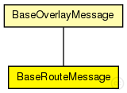

This documentation is released under the Creative Commons license
This documentation is released under the Creative Commons license(no description)
The following diagram shows usage relationships between types. Unresolved types are missing from the diagram. Click here to see the full picture.
The following diagram shows inheritance relationships for this type. Unresolved types are missing from the diagram. Click here to see the full picture.
| BaseOverlayMessage (packet) |
Base class for all messages handled by overlay modules |
| Name | Type | Description |
|---|---|---|
| srcNode | NodeHandle |
source node |
| destKey | OverlayKey |
destination key |
| hopCount | int |
hop count, increased by BaseOverlay |
| statType | int |
message type for stats |
| hints | NodeHandle[] |
hints for next hop (optional) |
| visitedHops | TransportAddress[] |
hops for source routing |
| type | int |
message type |
| nextHops | TransportAddress[] |
hops for source routing |
| hopDelay | simtime_t[] |
vector of single-hop latency (for stats) |
| hopStamp | simtime_t |
timestamp of processing at last hop |
| routingType | int |
routing type |
packet BaseRouteMessage extends BaseOverlayMessage { OverlayKey destKey; // destination key NodeHandle srcNode; // source node int routingType @enum(RoutingType); // routing type int hopCount = 0; // hop count, increased by BaseOverlay TransportAddress visitedHops[]; // hops for source routing TransportAddress nextHops[]; // hops for source routing NodeHandle hints[]; // hints for next hop (optional) simtime_t hopStamp; // timestamp of processing at last hop simtime_t hopDelay[]; // vector of single-hop latency (for stats) }
This documentation is released under the Creative Commons license